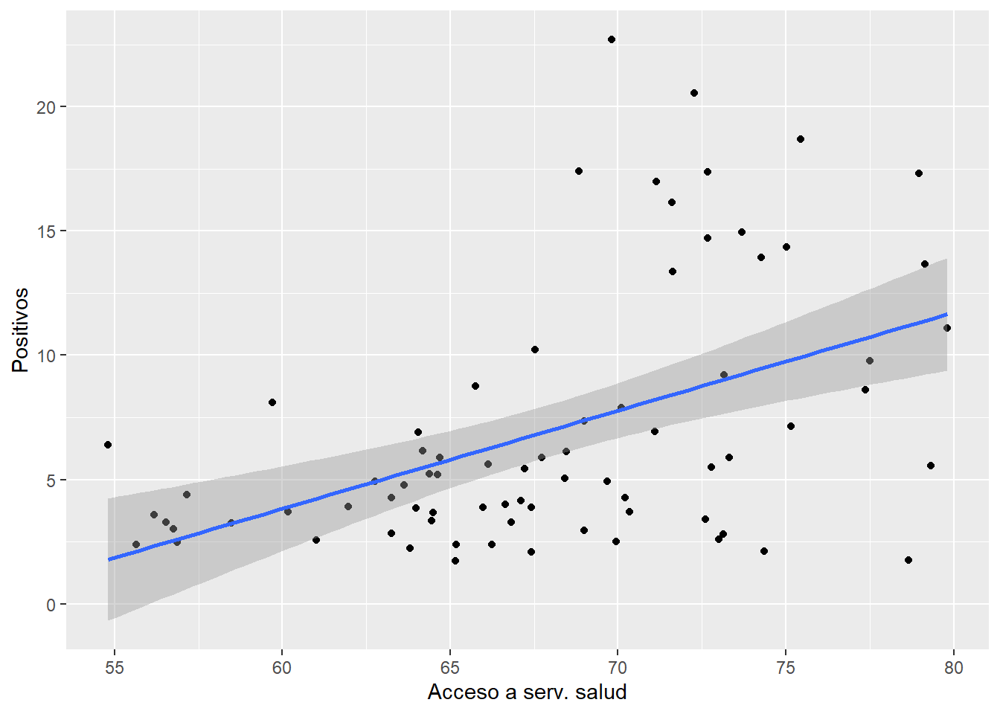
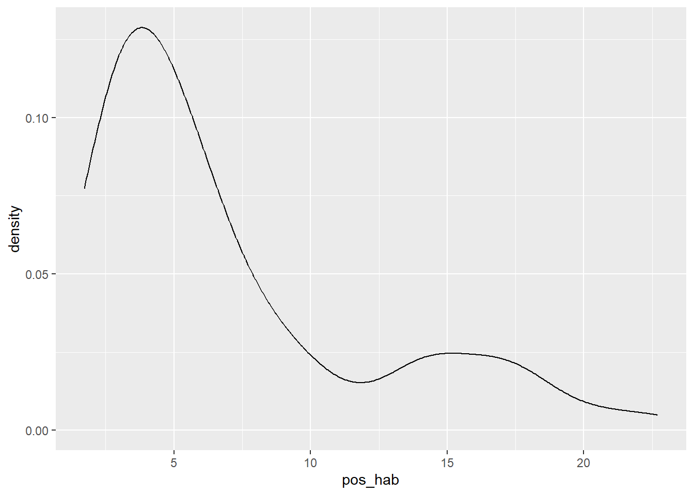
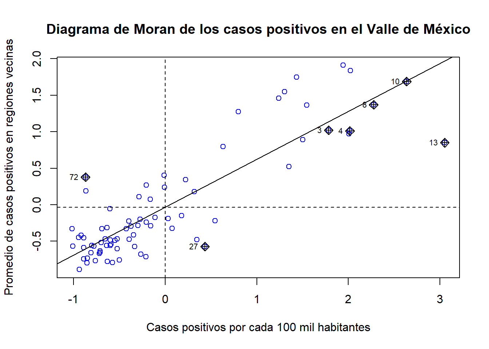

5 Análisis espacial II: modelos econométricos espaciales
En el capítulo 3 nos hemos referido a la necesidad de identificar la presencia de autocorrelación espacial en el conjunto de información utilizado. Mencionamos dos razones por las que conviene saber si la información usada presenta este rasgo: una de carácter técnico y otra que llamamos sustantiva. En términos de la segunda, la presencia de autocorrelación espacial significa que el fenómeno de interés no se distribuye de manera aleatoria en el espacio por lo que algo está pasando y debe ser investigado, ¿por qué la variable exhibe patrones en su distribución en el espacio? Por otro lado, en términos de la razón de carácter técnico, que no está desvinculada necesariamente de la razón previa, al estimar un modelo clásico de regresión lineal usando datos espaciales a través del método de Mínimos Cuadrados Ordinarios seguramente se violaría uno de sus supuestos, específicamente, aquel que tiene que ver con la independencia de los términos de error. Por tanto, por razones de la técnica utilizada y del interés de la investigadora, es necesario recurrir a un modelo econométrico espacial. Al hacerlo, se puede resolver el problema de la violación del citado supuesto y a la vez brindar elementos para buscar las causas que explican la formación de patrones en el espacio.
En este capítulo nos dedicamos a mostrar dos de las alternativas de modelos econométricos espaciales, es decir, modelos econométricos que incorporan diversos tipos de interacciones que se suceden en el espacio. Es crucial que, antes de abordar este capítulo, hayas asimilado los contenidos del capítulo 3 y 4, en la medida en que lo expuesto aquí se basa en los conocimientos previos.
5.1 Econometría espacial
La econometría espacial puede ser entendida como una rama de la econometría que incluye “…aquellos métodos y técnicas que, sustentados en una representación formal de la estructura de la dependencia y heterogeneidad espacial, provee el medio para llevar a cabo la adecuada especificación, estimación, prueba de hipótesis y predicción para modelos en la ciencia regional” (Anselin, 1988, citado por Quintana y Mendoza (2016: 356).
Desde una perspectiva teórica, la econometría espacial se ha desarrollado para resolver dos problemas que presenta la modelación econométrica con datos espaciales, relacionados con la violación de los supuestos del modelo clásico de regresión lineal que se expusieron en el capítulo previo: la heteroscedasticiadad (varianza no constante de los errores) y la autocorrelación (la dependencia entre los términos de error). No obstante, la econometría espacial se ha ocupado fundamentalmente del segundo problema, puesto que la heteroscedasticidad ha podido ser abordada en el marco de la econometría convencional.
No existe una única manera de incorporar en un modelo econométrico los efectos de interacción que se dan en el espacio y, por tanto, existe una amplia variedad de modelos econométricos espaciales, dependiendo del tipo de interacciones que en cada uno se incorpore.
5.1.1 Diversas alternativas de modelos econométricos
Existen múltiples modelos econométricos espaciales que buscan resolver el problema de la autocorrelación espacial. En todos los casos se trata de captar las interacciones que se dan en el espacio entre las variables consideradas. Estas interacciones son de diferente naturaleza, las puede haber en la varible dependiente y entonces se las denomina interacciones endógenas, las puede haber en la o las variables independientes y entonces se les llama interacciones exógenas, o bien, se pueden incorporar a través del término de error de la regresión.
El modelo que incorpora todas las posibles interacciones espaciales recibe el nombre de Modelo General Anidado (General Nesting Spatial Model (Elhorst 2006, 7) y puede ser escrito, en términos matriciales, como:
\[ \begin{aligned} Y &= \rho WY +\alpha1_N+X\beta+WX\theta+u \\ u &=\lambda Wu+\epsilon \\ \end{aligned} \]
Siguiendo a Elhorst (2006: 10), se le denomina modelo general justamente por el hecho de que incorporara todos los tipos de efectos espaciales posibles. Veamos con cuidado la expresión anterior para distinguir cada uno de sus términos y ver con claridad los diferentes tipos de efectos espaciales.
El término identificado como \(Y\) no es otro que el vector que contiene la variable dependiente de nuestro modelo, por ejemplo, el número de casos positivos por COVID19; \(X\) corresponde a la matriz de variables independientes que pueden ser, por ejemplo, el acceso a los servicios de salud y la proporción promedio de ocupantes por vivienda; el término \(\beta\) corresponde al conjunto de parámetros a ser estimados, además, seguro que te resulta familiar el término \(W\) que no es otra cosa que la estructura espacial definida a partir de la matriz de pesos espaciales; finalmente, listemos los diferentes efectos espaciales que aparecen en la expresión:
- Efectos de interacción endógenos, es decir, cuando la variable dependiente reaparece como independiente pero a través de su rezago espacial (\(WY\)), aquí el sentido y magnitud de la interacción está dado por el parámetro \(\rho\), llamado coeficiente autoregresivo espacial;
- Efectos de interacción exógenos, es decir, cuando las variables independientes son incluidas en forma de sus rezagos espaciales (\(WX\)) en la que la relación es captada por \(\theta\), también un parámetro o parámetros a estimar;
- Efectos de interacción dados por los términos de error de la regresión (\(Wu\)) y de ellos interesa el sentido y magnitud de \(\lambda\), el coeficiente a estimar, que es llamado coeficiente de autocorrelación espacial.
A partir del modelo general es posible derivar otros, más simples, si se suponen determinados valores para los coeficientes \(\rho\), \(\theta\) y \(\lambda\). Toda la constelación de modelos econométricos espaciales aparece en la figura 5.1 (Elhorst 2006, 7). Por ejemplo, si partiendo del modelo general se asume que \(\lambda=0\), se obtiene el denominado modelo espacial de Durbin; en tanto si \(\rho=\theta=\lambda=0\), llegamos al conocido modelo clásico de regresión lineal (MCO). Observa con cuidado cada una de las diferentes alternativas de modelación econométrica espacial y trata de reflexionar sobre sus diferencias.

Figura 5.1: Clasificación de modelos espaciales, Elhorst (2006)
Cada uno de los modelos econométricos espaciales de la figura buscan responder diferentes preguntas en relación a cómo la variable de interés, nuestra variable dependiente, se ve afectada por las interacciones espaciales que hemos mencionado. Por ejemplo, quizá como parte de la exploración de la pandemia por COVID19 nos dimos cuenta de que el número de casos positivos por este mal está asociado con el acceso a los servicios de salud en los municipios vecinos, es decir, el rezago espacial de la población con acceso a servicios de salud, tal como se aprecia en el siguiente diagrama de dispersión:
## `geom_smooth()` using formula = 'y ~ x'
Como puedes observar, el diagrama de dispersión muestra que existe asociación lineal positiva entre el valor promedio de la población con acceso a servicios de salud en los municipios vecinos (el rezago espacial en el eje X) y el número de casos positivos por COVID19 (en el eje Y), por tanto, podría ser pertinente proponer un modelo que incluya dicho efecto espacial, es decir, un efecto espacial dado por la variable independiente (efecto espacial exógeno).
Ejercicio
¿Cuál es el nombre de los modelos econométricos espaciales que incorporan dicho efecto?
Una relación como la anterior quizá pueda ser modelada a través de un modelo espacial de Durbin, \(Y=\rho WY+\alpha 1n+X\beta+WX \theta+\epsilon\), puesto que a la investigadora pudiera interesarle cómo los valores de las variables independientes en los espacios vecinos inciden en el fenómeno de interés.
Así pues, la elección del tipo de modelo espacial depende, en lo fundamental, de dos elementos: i) la evidencia de asociación espacial entre el conjunto de variables disponibles y que se revela a través del análisis exploratorio de datos espaciales (definición de criterios de vecindad, construcción de índices de Moran) y ii) los intereses y propósitos de la investigación.
5.2 Los modelos econométricos de error espacial y rezago espacial
De toda la gama de modelos econométricos espaciales que es posible construir, aquí sólo nos ocuparemos de dos de ellos, el modelo de rezago espacial y el modelo de error espacial.
Para ello, seguimos la ruta metodológica propuesta por Anselin y Rey (2014) que consiste en comenzar con un modelo lineal no espacial estimado con mínimos cuadrados ordinarios (MCO) que luego es extendido con la incorporación de interacciones espaciales, ya sea incluyendo a \(\rho\), el coeficiente autoregresivo espacial o a \(\lambda\), el término de autocorrelación espacial, tal y como se muestra en la figura 5.2.

Figura 5.2: De un modelo con MCO a un modelo espacial
5.2.1 Secuencia general para la estimación
La estimación de un modelo econométrico de error o rezago espacial, siguiendo a Anselin y Rey (2014), puede ser dividida en los siguientes pasos:
- Estimar un modelo clásico de regresión lineal con mínimos cuadrados ordinarios.
- Evaluar la presencia de autocorrelación espacial en los errores del modelo.
- Evaluar, alternativamente, la pertinencia de un modelo de rezago o de error espacial.
- Estimar el modelo de rezago y de error espacial y apuntar cuál de ellos capta mejor la relación propuesta.
El punto i ha sido abordado en el capítulo previo, sin embargo regresaremos a ello más adelante de forma práctica para describir la secuencia general. Sobre el punto ii nos detendremos un momento para explicarlo con más detalle. Bien podrías pensar que la evaluación de la autocorrelación ha quedado plenamente cubierta en el capítulo 3 cuando nos referimos al análisis exploratorio de datos espaciales y usamos la I de Moran; sin embargo, es necesario distinguir entre autocorrelación en la variable de interés y autocorrelación en los errores del modelo, lo primero lo hicimos en el citado capítulo, mientras que lo segundo corresponde a la secuencia para la selección del modelo econométrico espacial.
Si se ha encontrado evidencia de autocorrelación en la variable a través de los instrumentos de exploración, como los diversos mapas y la I de Moran, estos elementos nos llevan a pesar que al usar dicha variable en un modelo econométrico lineal simple estimado con MCO, muy probablemente los términos de error estén correlacionados y, por tanto, se violaría dicho supuesto. Para verificarlo, ahora estimaremos la I de Moran sobre los errores del modelo: en esto justamente consiste el paso ii.
Ahora bien, si hallamos evidencia de que los errores del modelo lineal están autocorrelacionados, sabremos que lo mejor es estimar un modelo econométrico espacial. Pero, ¿cuál es mejor, el modelo de error espacial o el de rezago? Para ello recurriremos a un estadístico denominado Prueba de los Multiplicadores de Lagrange o Prueba de Puntaje de Rao (Rao score test), que fue desarrollada por Anselin a finales de la década de los ochenta del siglo pasado (Anselin and Rey 2014: 105). Las pruebas nos permitirán decidir qué modelo es mejor, evaluando entre el modelo lineal y el de rezago, por un lado, y el modelo lineal y el de error, por otro.
Así, cuando se evalúa entre el modelo lineal y el modelo de rezago lo que en el fondo hacemos es probar estadísticamente si \(\rho\), el coeficiente autoregresivo espacial, realmente está presente en la relación propuesta. Recordemos la estructura del modelo de rezago:
\[ y=\rho Wy+X\beta+u \]
De modo que, formalmente, el juego de hipótesis a evaluar y que nos permitirán decidir entre el modelo lineal y el modelo de rezago es:
\[ \begin {aligned} Ho &: \rho=0 \\ Ha &: \rho\not=0 \\ \end {aligned} \]
Según lo que nos indique el multiplicador de Lagrange y su valor-p asociado, a determinado nivel de significancia, rechazar la hipótesis nula significará que, entre el modelo lineal y el modelo de rezago, el mejor modelo es un modelo de rezago espacial.
En esta misma línea de razonamiento, del modelo de error nos interesa saber si \(\lambda\) es diferente de 0 y, por tanto, si juega algún papel relevante en la relación propuesta. Recuerda que el modelo de error luce como:
\[ \begin{aligned} Y &= \alpha1_N+X\beta+u \\ u &=\lambda Wu+\epsilon \\ \end{aligned} \]
Formalmente, las hipótesis a verificar son:
\[ \begin {aligned} Ho &: \lambda=0 \\ Ha &: \lambda\not=0 \\ \end {aligned} \]
Igualmente, el estadístico usado para evaluar nuestras hipótesis es el multiplicador de Lagrange y que, dado determinado nivel de significancia, rechazar la hipótesis nula significa que, entre el modelo lineal y el modelo de error, el mejor modelo es uno de error espacial.
Pero, ¿qué ocurre cuando en las pruebas anteriores no son concluyentes? Es decir, cuando tanto la prueba sobre la versión de rezago y de error han resultado ambas significativas? Sin abudar en los detalles técnicos del caso, esto podría pasar porque el estadístico del multiplicador de Lagrange sobre el modelo de rezago, \(LM_{\rho}\), es sensible a la presencia autocorrelación espacial en el término de error, lo mismo que el estadístico del multiplicador de Lagrange sobre el modelo de error, \(LM_{\lambda}\) que es sensible a la presencia autocorrelación espacial en el rezago. Para decirlo de forma hipersimplificada, estas pruebas podrían dar un “falso positivo”.
Exclusivamente cuando en ambos casos se rechazan las respectivas hipótesis nulas, es decir que \(\lambda\not=0\) y \(\rho\not=0\), habremos de recurrir a las llamadas “versiones robustas” del multiplicador de Lagrange. Las versiones robustas de dichos indicadores implican “que el estadístico original es corregido mediante la influencia potencial de ‘otras’ alternativas” (Anselin y Rey, 2014: 105). Usar la versión robusta del multiplicador de Lagrange que evalúa entre la alternativa del modelo lineal y el modelo de rezago implica que dicha prueba determina con mayor precisión si hay presencia de autocorrelación y esta es captada a través del coeficiente autoregresivo espacial, excluyendo los efectos que podrían estar dados por el coeficiente de autocorrelación espacial; reciprocamente para la prueba en la versión robusta del multiplicador de Lagrange sobre la alternativa del modelo lineal respecto al modelo de error.
Usemos una analogía para mejor comprender lo anterior. Imagina que intentas pasar por un colador un poco de harina que tiene algunos terrones porque ha estado algún tiempo en la despensa. Si los orificios del colador son demasiado grandes dejarán pasar los terrones y pensaríamos que nuestra harina estaba libre de terrones. No obstante, si usamos un colador con orificios más finos, los terrones no pasarán y sabremos que la harina, en efecto, tenía terrones. Algo semejante ocurre con los multiplicadores de Lagrange en sus versiones estándar y robustas: los orificios del colador en las pruebas robustas son más finos, permitiéndonos discriminar con mayor seguridad entre uno y otro modelo, para tener evidencia concluyente.
Así, por ejemplo, si el multiplicador de Lagrange en la versión robusta que evalúa entre un modelo lineal y un modelo de rezago sostiene que el mejor modelo es el modelo de rezago, mientras que el multipilcador de Lagrange en su versión robusta que evalúa entre un modelo lineal y un modelo de rezago sostiene que el mejor modelo es el modelo lineal, la conclusión a la que arribamos, a la luz ofrecida por ambas pruebas, es que el mejor modelo es el modelo de rezago espacial. Para simplificar, basta recordar lo recomendado por Anselin (2005, 197): “lo importante a recordar (en la selección entre modelos espaciales) es considerar las versiones robustas de los estadísticos (los multiplicadores de Lagrange) sólo cuando las versiones estándar son ambas significativas.
Finalmente, ya que tenemos claro qué modelo capta mejor la relación propuesta, procederemos a estimar y analizar dicho modelo. Todos los pasos que hemos tratado de describir hasta aquí, son sintetizados por Anselin y Rey (2014) en el siguiente esquema:

Figura 5.3: Árbol de decisión de regresión espacial, Anselin y Rey (2014)
En las siguientes sección se ilustra cómo seguir esta hoja de ruta para estimar los dos modelos que incluyen efectos espaciales: el de error y el de rezago y decidir cuál es el mejor.
5.3 Modelos espaciales en R: un ejemplo para el Valle de México
En esta sección exponemos cómo, a través de algunos paquetes y funciones en R, podemos recorrer el camino propuesto en la sección anterior, que nos llevará a decidir cuál es el mejor modelo que capta las interacciones que se dan en el espacio, uno de error o de rezago. No obstante, antes e ello, aprovecharemos para hacer un brevísimo recordatorio de algunas de las herramientas mostradas en los capítulos previos, a fin de mostrar su uso de forma integrada en el contexto del planteamiento de un modelo econométrico espacial.
5.3.1 Recapitulación: la necesidad de un modelo espacial
Antes de emprender la tarea de la estimación de los modelos espaciales siguiendo la secuencia anterior, llevaremos a cabo un recuento de diversos elementos que nos permitirán poner en contexto el problema de la selección del modelo espacial y, al mismo tiempo, recapitular algunos de los tópicos tratados a lo largo de este libro.
Hemos estado analizando un conjunto de variables sociodemográficas y económicas con la intensión de indagar cuál es su relación con la situación de la pandemia por COVID19 durante la primera ola en una región del centro de México llamada Zona Metropolitana del Valle de México.
En el primer capítulo de este material expusimos una serie de herramientas para tener una primera aproximación con el conjunto de datos. Esas herramientas, entre otros aspectos, integran un enfoque denominado Análisis Exploratorio de Datos (EDA) y tiene por objeto, antes de proponer cualquier modelo, conocer la estructura subyacente de la información e indagar en la asociación entre variables para responder y plantear algunas preguntas de carácter preliminar en torno al objeto de estudio construido.
Por ejemplo, a través de un diagrama de caja del número de casos positivos es posibleidentificar observaciones a típicas, es decir, valores extremadamente altos o bajos:

Los puntos en color rojo son observaciones extremadamente altas, en el rango de la información utilizada. Del mismo modo, una gráfica de la densidad de probabilidad de la variable nos indica cómo ésta se distribuye:

La “cola” de esta gráfica que se extiende a la derecha (sesgo positivo) indica, como la anterior, que hay valores muy altos. Esto nos lleva a pensar en las razones de este comportamiento, ¿por qué hay unidades territoriales, municipios en este caso, que presentan tal magnitud de casos? El EDA, justamente, busca despertar nuestra curiosidad e imaginación en torno al fenómeno analizado.
Otro tipo de pregunta que nos permite responder de forma preliminar el EDA es, por ejemplo, la siguiente: ¿existe asociación entre el número de casos positivos por COVID19 y el acceso a los servicios de salud? Una manera sencilla de acercarse a la respuesta de tal pregunta es a través de un diagrama de dispersión:
## `geom_smooth()` using formula = 'y ~ x'
El gráfico anterior indica que, en efecto, parece haber una relación lineal positiva entre ambas variables, ¿por qué crees que pueda existir esta relación, qué la fundamenta? Habrá pues que indagar y reflexionar sobre las posibles explicaciones que se hayan dado a una relación como la identificada.
Por otro lado, el interés central de este libro ha sido brindar algunas herramientas básicas para el tratamiento de información espacial: el espacio importa, dónde ocurren los fenómenos y cómo se comportan o distribuyen en el territorialmente es un elemento clave para comprender tales fenómenos cabalmente.
Por ejemplo, ¿hay algún patrón en cómo se dieron los casos positivos por COVID19 en el Valle de México? Para tener una primera idea de esto, podemos construir un mapa, como los expuestos en el capítulo 2, cuando tratamos con los mapas de coropletas:
## Reading layer `covid_zmvm' from data source
## `C:\repos\Analisis-de-datos-espaciales\base de datos\covid_zmvm shp\covid_zmvm.shp'
## using driver `ESRI Shapefile'
## Simple feature collection with 76 features and 57 fields
## Geometry type: MULTIPOLYGON
## Dimension: XY
## Bounding box: xmin: 2745632 ymin: 774927.1 xmax: 2855437 ymax: 899488.5
## Projected CRS: Lambert_Conformal_Conic
Es valido sostener, al menos inicialmente que, en efecto, hay una concentración de los casos positivos en la zona sur del área estudiada, la Ciudad de México, donde se muestran los colores en azul más intenso. Esta concentración identificada visualmente, nos lleva a pensar en la necesidad de evaluar formalmente si los datos sobre los casos positivos por COVID19 muestran patrones sistemáticos de agrupamiento en el territorio. Para ello, podemos recurrir a la prueba de autocorrelación espacial que vimos en el capítulo 3, la I de Moran. Como recordarás del capítulo 3, para construir el estadístico de asociación espacial de Moran hay que definir una estructura espacial, es decir, definir entre qué unidades espaciales hay una relación de vecindad, misma que es recogida en la llamada matriz de pesos espaciales. Con una relación de vecindad de tipo reina, la I de Moran y el diagrama de Moran sobre el número de casos positivos luce como:
##
## Moran I test under randomisation
##
## data: covid_zmvm$pos_hab
## weights: mTRUE.pesos
##
## Moran I statistic standard deviate = 8.8625, p-value < 2.2e-16
## alternative hypothesis: greater
## sample estimates:
## Moran I statistic Expectation Variance
## 0.656334129 -0.013333333 0.005709563
La información que nos proporciona la I de Moran indica que los casos positivos por COVID19 en el Valle de México muestran un patrón de agrupamiento sistemático en las unidades territoriales analizadas: el coeficiente es positivo, relativamente alto y estadisticamente significativo. Así pues, a un nivel aún exploratorio, tanto el mapa como la I de Moran dan cuenta de que la variable a explicar presenta autocorrelación espacial.
Hay varios elementos interesantes respecto a la evidencia anterior. Primero, si estimamos un modelo econométrico lineal buscando explicar los casos positivos, lo más probable es que se violaría el supuesto de independencia en los términos de error de la regresión que exige un modelo lineal clásico, por lo no sería el más apropiado para explicar dicho fenómeno. Segundo, y quizá lo más interesante, es que debemos reflexionar sobre el hecho de que la variable a explicar presenta patrones de asociación en el espacio: ¿por qué los casos positivos de COVID19 son más altos en algunos grupos de municipios de la ciudad que en otros?
La respuesta a esta pregunta es compleja y, desde luego, requiere una reflexión cuidadosa sobre las teorías y trabajos previos de especialistas en el tema que han tratado sobre los patrones espaciales en la transmisión de una enfermedad, como el clásico trabajo de Cliff y sus colaboradores (Cliff et al. 1981) sobre la dinámica espacial de las pandemias en Islandia, aunque ciertamente se ha aceptado que las epidemias pueden y deben analizarse desde una perspectiva espacial (Rezaeian et al. 2007).
El caso es que hay tanto evidencia en los datos, como en trabajos previos que nos llevan a pensar en la pertinencia de un modelo econométrico espacial que incorpore el comportamiento que hemos identificado en un nivel exploratorio: la autocorrelación espacial en los casos positivos por COVID19. Ahora entonces, cuál es el mejor modelo que podemos usar, ¿uno de rezago espacial o de error espacial? Seguiremos pues la secuencia de la sección anterior para decidir, mientras ilustramos el proceso a través de los paquetes y funciones que nos ofrece R.
5.3.2 Estimación de los modelos espaciales
Ahora que tenemos claro que requerimos un modelo espacial si lo que prentedemos es explicar los casos positivos por COVID19 en el Valle de México, veamos cómo llevar a cabo esto a través de R.
Los paquetes utilizados para la estimación de modelos econométricos espaciales son:
spatialreg: un paquete que contiene las funciones para calcular los modelos econométricos espaciales que hemos comentado antes.spdep: es el mismo paquete que usamos en el capítulo 3 y que contiene funciones para evaluar dependencia espacial y construir matrices de pesos espaciales.
Como es usual, la instalación desde la consola puede hacerse con:
Además, echaremos mano de otros tantos paquetes previamente trabajados, por lo que deberán ser llamados junto con los recién instalados:
#Paquetes recién instalados
library(spdep)
library(spatialreg)
#Otros paquetes usados
library(rgdal)
library(sp)La base de datos a usar en este ejercicio es la misma que hemos usando antes y que puedes descargar aquí. Para cargar nuestra base de datos:
## Warning: OGR support is provided by the sf and terra packages among others## Warning: OGR support is provided by the sf and terra packages among others## Warning: OGR support is provided by the sf and terra packages among others## Warning: OGR support is provided by the sf and terra packages among others## Warning: OGR support is provided by the sf and terra packages among others## Warning: OGR support is provided by the sf and terra packages among others## Warning: OGR support is provided by the sf and terra packages among others## OGR data source with driver: ESRI Shapefile
## Source: "C:\repos\Analisis-de-datos-espaciales\base de datos\covid_zmvm shp\covid_zmvm.shp", layer: "covid_zmvm"
## with 76 features
## It has 57 fieldsDe acuerdo a lo dicho en las secciones previas, primero debemos estimar un modelo clásico de regresión lineal con mínimos cuadrados ordinarios. Usaremos el mismo modelo del capítulo sobre regresión lineal en su versión simple: un modelo que busca explicar los casos positivos por COVID-19 por cada 1 mil habitantes (pos_hab) mediante la población con acceso a servicios de salud (ss), la especificación de dicho modelo lineal luce como:
\[
poshab_i=\beta_0+\beta_1ss_i+u_i
\]
La variable que buscamos explicar con nuestro modelo será casos positivos a COVID19 por cada 1 mil habitantes, pos_hab, explicada a través del porcentaje de población con acceso a a servicios de salud, ss. La estimación del modelo lineal, tal y como se expuso en el capítulo 4, es:
##
## Call:
## stats::lm(formula = pos_hab ~ ss, data = covid_zmvm)
##
## Residuals:
## Min 1Q Median 3Q Max
## -9.4391 -2.7744 -0.6709 1.5324 14.9969
##
## Coefficients:
## Estimate Std. Error t value Pr(>|t|)
## (Intercept) -19.862 5.809 -3.419 0.00102 **
## ss 39.490 8.516 4.637 1.49e-05 ***
## ---
## Signif. codes: 0 '***' 0.001 '**' 0.01 '*' 0.05 '.' 0.1 ' ' 1
##
## Residual standard error: 4.572 on 74 degrees of freedom
## Multiple R-squared: 0.2252, Adjusted R-squared: 0.2147
## F-statistic: 21.5 on 1 and 74 DF, p-value: 1.488e-05Ejercicio
¿Qué puedes decir sobre la significancia individual del coeficiente estimado? ¿Qué sobre la bondad de ajuste del modelo?
Una vez que hemos estimado el modelo lineal a través del MCO, hemos completado el paso i de nuestra secuencia general. Debemos ahora evaluar la presencia de autocorrelación en los térinos de error del modelo, es decir, el paso ii. De nueva cuenta insistimos en la diferencia entre evaluar la autocorrelación sobre la variable de interés (lo que hicimos hace un momento con la I de Moran y su diagrama sobre la variable pos_hab) y evaluar la autocorrelación sobre los errores del modelo, lo que haremos en este momento.
Verificamos la presencia de autocorrelación espacial de los errores a través de la I de Moran, lo que nos permitirá responder a la pregunta ¿los errores de nuestro modelo están correlacionados? Para ello, nos servimos de la función moran.test() del paquete spdep. Como recordarás, la función requiere dos argumentos: el vector número a evaluar (en este caso los errores del modelo MCO) y la estructura espacial.
En el capítulo relativo al análisis exploratorio de datos espaciales vimos que la definición de una estructura espacial atraviesa por la construcción de una matriz de pesos espaciales, recuerda que a través de la función poly2nb() del paquete spdep construimos nuestra lista de vecinos con base en los criterios de contigüidad de tipo reina (queen=TRUE):
Ahora, el objeto de tipo nb debe ser trasformado a uno que contenga los pesos espaciales, es decir, la matriz ponderada: un objeto de tipo listw:
Ahora, alculemos la I de Moran sobre los términos de error:
##
## Moran I test under randomisation
##
## data: modelo_mco$residuals
## weights: mTRUE.pesos
##
## Moran I statistic standard deviate = 6.9825, p-value = 1.45e-12
## alternative hypothesis: greater
## sample estimates:
## Moran I statistic Expectation Variance
## 0.512928287 -0.013333333 0.005680411Ejercicio
Con base en los resultados de la I de Moran, ¿dirías que existe autocorrelación espacial en los errores?
Lo usual es que cuando la variable de interés presenta autocorrelación, esta característica termine por afectar los resultados de la estimación por mínimos cuadrados ordinarios, tal y como ha ocurrido en este caso en donde los errores del modelo lineal están correlacionados.
Así pues, es necesario, siguiendo la ruta marcada por Anselin y Rey (2014), evaluar, alternativamente, la pertinencia de un modelo de rezago o de error espacial, es decir, el paso iii. Como dijimos antes, esto lo haremos con base en las pruebas sobre las dos alternativas propuestas (modelo de rezago o modelo de error), a través de los multiplicadores de Lagrange, primero observando sus versiones estándar y, sólo si éstas no son concluyentes, después, sus versiones robustas
Las pruebas son llamadas con la función lm.LMtests() del paquete spdep que requiere de los siguientes argumentos: el modelo lineal a evaluar (model=), la estructura espacial (listw=) y los pruebas solicitadas (test=):
##
## Lagrange multiplier diagnostics for spatial dependence
##
## data:
## model: stats::lm(formula = pos_hab ~ ss, data = covid_zmvm)
## weights: mTRUE.pesos
##
## LMlag = 55.313, df = 1, p-value = 1.028e-13
##
##
## Lagrange multiplier diagnostics for spatial dependence
##
## data:
## model: stats::lm(formula = pos_hab ~ ss, data = covid_zmvm)
## weights: mTRUE.pesos
##
## LMerr = 42.733, df = 1, p-value = 6.275e-11
##
##
## Lagrange multiplier diagnostics for spatial dependence
##
## data:
## model: stats::lm(formula = pos_hab ~ ss, data = covid_zmvm)
## weights: mTRUE.pesos
##
## RLMlag = 13.358, df = 1, p-value = 0.0002573
##
##
## Lagrange multiplier diagnostics for spatial dependence
##
## data:
## model: stats::lm(formula = pos_hab ~ ss, data = covid_zmvm)
## weights: mTRUE.pesos
##
## RLMerr = 0.77786, df = 1, p-value = 0.3778Revisa la ayuda relacionada con la función lm.LMtests() para familiarizarte con todos sus argumentos. En este caso, solicitamos las 4 pruebas de las que hicimos mención previamente: la prueba del multiplicador de Lagrange sobre la alternativa del modelo de rezago (LMlag), la prueba del multiplicador de Lagrange sobre la alternativa del modelo de error (LMerr), así como sus respectivas versiones robustas (RLMlag,RLMerr).
Interpretemos los resultados. Primero, contrastemos las versiones estándar de los multiplicadores, que aparecen el la siguiente tabla:
| Estadístico | valor-p | |
|---|---|---|
| LMlag | 55.313 | 1.028e-13 |
| LMerr | 42.733 | 6.275e-11 |
Tanto el estadístico vinculado al modelo de rezago, como el del error son estadísticamente significativos, es decir, en cada caso se rechaza la hipótesis nula de que \(\rho=0\) y \(\lambda=0\), respectivamente, por lo que tanto un modelo de rezago como de error son plausibles: no tenemos pues, con las versiones estándar, pruebas concluyentes de qué modelo es mejor. En este caso, hay que mirar los resultados de las versiones robustas para tomar la decisión final:
| Estadístico | valor-p | |
|---|---|---|
| RLMlag | 13.358 | 0.0002573 |
| RLMerr | 0.77786 | 0.3778 |
En este caso, sólo el estadístico vinculado al modelo de rezago, RLMlag, resulta significativo, es decir, se rechaza la hipótesis nula de que \(\rho=0\); en tanto, para el caso del estadístico vinculado al modelo de error, RLMerr, no podemos rechazar la hipótesis nula de que \(\lambda=0\). A la luz de la evidencia anterior, la mejor alternativa de modelo econométrico espacial es el modelo de rezago, por las siguientes razones:
- La variable a explicar mostró, a través de mapas de clasificación común y elestadístico de Moran, evidencia de autocorrelación espacial.
- Los términos de error del modelo lineal mostraban también autocorrelación, por lo que dicho modelo viola, al menos, uno de sus supuestos.
- Las versiones robustas de los multiplicadores de Lagrange mostraron que, entre un modelo MCO y uno de rezago, el mejor era el de rezago, y que entre un modelo MCO y uno de error es mejor el de MCO, pero por las razones i y ii, y por la versión robusta sobre el modelo de rezago, resulta que el mejor modelo es el de rezago espacial.
Revisa de nueva cuenta la figura 5.3 para mejor entender nuestra decisión. Finalmente, los tanto el modelo de rezago como el de error serán estimados, con ello, llegamos al paso iv y habremos terminado la secuencia.
5.3.2.1 Modelo de rezago espacial
El modelo de rezago espacial se invoca con al función lagsarlm() del paquete spatialreg en la que la estimación corre a cargo del método de máxima verosimilitud. En la función se especifica el modelo (formula=), la base de datos (data=) y la estructura espacial (listw=).
library(spatialreg)
rezago <- spatialreg::lagsarlm(formula=pos_hab ~ ss, data=covid_zmvm, listw=mTRUE.pesos)
summary(rezago)##
## Call:spatialreg::lagsarlm(formula = pos_hab ~ ss, data = covid_zmvm,
## listw = mTRUE.pesos)
##
## Residuals:
## Min 1Q Median 3Q Max
## -5.72501 -1.71081 -0.31629 1.12054 11.64378
##
## Type: lag
## Coefficients: (asymptotic standard errors)
## Estimate Std. Error z value Pr(>|z|)
## (Intercept) -8.8906 3.4221 -2.5980 0.009377
## ss 14.9811 5.1378 2.9159 0.003547
##
## Rho: 0.83629, LR test value: 62.655, p-value: 2.4425e-15
## Asymptotic standard error: 0.056938
## z-value: 14.688, p-value: < 2.22e-16
## Wald statistic: 215.73, p-value: < 2.22e-16
##
## Log likelihood: -191.0071 for lag model
## ML residual variance (sigma squared): 7.1381, (sigma: 2.6717)
## Number of observations: 76
## Number of parameters estimated: 4
## AIC: 390.01, (AIC for lm: 450.67)
## LM test for residual autocorrelation
## test value: 0.10973, p-value: 0.74045De la salida debemos llamar la atención sobre los coeficientes de interés: \(\rho\), el coeficiente autoregresivo espacial, que en este caso es positivo, significativo y alto (0.83). ¿Qué es lo que dicho valor significa? La interpretación que podría darse a este coeficiente es que cuando aumenta en una unidad el número de casos positivos en los municipios y alcaldías vecinas, el número de casos positivos por COVID19 por cada 1 mil habitantes en el municipio de interés aumentará en 0.83. Hemos pues encontrado evidencia de que hay interacciones espaciales entre el estado y dinámica de la pandemía por COVID19 en la región estudiada: lo que pasa en las áreas territoriales vecinas afecta a la unidad territorial de referencia. Esto podría tener implicaciones sobre las medidas de política sanitaria en la contención de la enfermedad y en el posible desarrollo futuro de ésta.
Por supuesto, hay que decir, que esto es sólo un ejercicio ilustrativo y que una interpretación más fina atraviesa por un concienzudo y sistemático estudio del carácter espacial de la transmisión de las enfermedades, lo que el autor de estas líneas está lejos de lograr, por lo que los resultados deben interpretarse con cautela y sólo con fines didácticos.
Las líneas anteriores dan cuenta del elemento sustantivo del fenómeno de interés: la pandemia tiene un fuerte componente espacial y lo hemos logrado captar a través del coeficiente autorregresivo espacial en el modelo de rezago. Pero, ¿con este modelo hemos logrado resolver el problema de la autocorrelación en los errores? Los términos de error del modelo de rezago que recién hemos estimado pueden ser visualizados, guardados y evaluados para ver si presentan autocorrelación:
##
## Moran I test under randomisation
##
## data: rezago[["residuals"]]
## weights: mTRUE.pesos
##
## Moran I statistic standard deviate = -0.030802, p-value = 0.5123
## alternative hypothesis: greater
## sample estimates:
## Moran I statistic Expectation Variance
## -0.015615681 -0.013333333 0.005490469Ejercicio
Con base en los resultados de la I de Moran sobre los términos de error del modelo de rezago, ¿dirías que persite el problema de autocorrelación espacial en los errores en el modelo de rezago?
5.3.2.2 Modelo de error espacial
El modelo de error espacial es llamado con la función errorsarlm() y los argumentos son los mismos:
error <- spatialreg::errorsarlm(formula=pos_hab ~ ss, data=covid_zmvm, listw=mTRUE.pesos)
summary(error)##
## Call:spatialreg::errorsarlm(formula = pos_hab ~ ss, data = covid_zmvm,
## listw = mTRUE.pesos)
##
## Residuals:
## Min 1Q Median 3Q Max
## -5.80220 -1.62230 -0.39269 1.11193 11.55180
##
## Type: error
## Coefficients: (asymptotic standard errors)
## Estimate Std. Error z value Pr(>|z|)
## (Intercept) -0.66237 5.03921 -0.1314 0.89543
## ss 12.54484 6.30980 1.9882 0.04679
##
## Lambda: 0.87101, LR test value: 58.512, p-value: 2.0206e-14
## Asymptotic standard error: 0.050779
## z-value: 17.153, p-value: < 2.22e-16
## Wald statistic: 294.22, p-value: < 2.22e-16
##
## Log likelihood: -193.0788 for error model
## ML residual variance (sigma squared): 7.3069, (sigma: 2.7031)
## Number of observations: 76
## Number of parameters estimated: 4
## AIC: NA (not available for weighted model), (AIC for lm: 450.67)Aquí, el parámetro de interés estimado es \(\lambda\), el coeficiente de autocorrelación espacial, que resultó positivo, alto y estadísticamente significativo, también (0.87). En este caso, las posibilidades de interpretación sustantiva del coeficiente obtenido son mucho más limitadas, ya que los efectos espaciales están modelados por el término de error.
Recordemos que los términos de error incluyen los efectos de todas aquellas variables que no están siendo incluidas en nuestro modelo. En este caso, entonces, no es posible brindar una lectura explícita de la variable o variable que determinan las interacciones espaciales. Sólo podemos contentarnos con decir que el problema de la dependencia entre los términos de error ha sido resuelto y que el componente espacial es considerablemente alto.
Con la siguiente línea, se verifica que se ha resuelto el problema de la autocorrelación en los errores:
##
## Moran I test under randomisation
##
## data: error[["residuals"]]
## weights: mTRUE.pesos
##
## Moran I statistic standard deviate = 0.18736, p-value = 0.4257
## alternative hypothesis: greater
## sample estimates:
## Moran I statistic Expectation Variance
## 0.0005636588 -0.0133333333 0.0055017348Con estos resultados hemos completado la ruta más elemental para la estimación de modelos econométricos espaciales; sin embargo, no debemos olvidar que existen todas las alternativas que apuntamos en la figura 5.1 y que no fueron discutidas aquí.
5.4 Reflexiones finales
Hay una serie de tópicos que han quedado fuera de estas notas, tales como los modelos que buscan resolver la heterogeneidad espacial, aquellos que atienden la violación del supuesto de homoscedasticidad en las perturbaciones, o bien, la incorporación de la dimensión temporal a nuestro análisis, a través de instrumentos como los modelos de panel, por lo que este material no es sino sólo un abordaje introductorio, una invitación a que profundices por tu propia cuenta en el manejo de las herramientas para el tratamiento de datos espaciales.
Cerramos este libro recomendado una serie de materiales para cada uno de los capítulos que hemos tratado aquí.
Para el Capítulo 1, donde tuvimos oportunidad de presentar los elementos básicos de R y RStudio mediante el análisis exploratorio de datos, recomendamos consultar el curso gratuito ofrecido por la Universidad Nacional Autónoma de México a través de la plataforma Coursera Introducción a Data Science: Programación Estadística con R, así como la versión en castellano del excelente libro de Wickham y Grolemund R para Ciencia de Datos.
Para el Capítulo 2, centrado en la elaboración de mapas coropléticos, hay varios materiales que puedes consultad, como blogs o los servidores que contiene ejercicios y prácticas, como RPubs, aunque también existen los materiales desarrollados por los propios autores de la paquería, aunque no están en castellano.
En el Capítulo 3, que trató sobre los elementos básicos del análisis exploratorio de datos espaciales, existen los materiales desarrollados por los colegas del Centro de Estudios de Desarrollo Regional y Urbano Sustentable quienes, en su canal de YouTube, desarrollan una serie de prácticas introductorias de exploración de información espacial, aunque con otro Softeare (GeoDa).
Para el Capítulo 4 y Capítulo 5](https://jaime-pru.github.io/Analisis-de-datos-espaciales/an%C3%A1lisis-espacial-ii-modelos-econom%C3%A9tricos-espaciales.html) existe un sin número de materiales para el análisis de regresión, como el libro electrónico de Luis Quintana y Miguel A. Mendoza “Econometría Aplicada Utilizando R”, que puedes descargar libremente desde aquí, del que el último capítulo aborda el tema de econometría espacial.
Esperamos que estas notas contribuyan a alimentar tu curiosidad sobre el tratamiento y análisis de información espacial y que sean un primer paso en tu formación como profesional.